Most of what I've built has been for someone who needs it — a surgeon working inside an MRI scanner, a person whose forearm tires halfway through a task, a hand that can't close on its own. That's the thread. The engineering I care about is the part after the demo works once: measuring it honestly, finding out where it actually fails, and fixing the thing that turned out to matter rather than the thing I assumed would.
Available now · London · full UK right to workSteering a catheter from inside an MRI scanner means the robot has to work in a strong magnetic field, where a conventional electric motor is both a hazard and a source of image artefacts. One answer is compressed air: put nothing metallic near the bore, and drive the mechanism pneumatically from the control room next door.
I built the drive system for a three-chamber rolling-diaphragm rotary actuator — the solenoid-valve manifold, the MOSFET switching electronics, and the Arduino firmware that sequences the three chambers 120° out of phase on a 60 ms period. Then I characterised it on the bench across the full operating range.
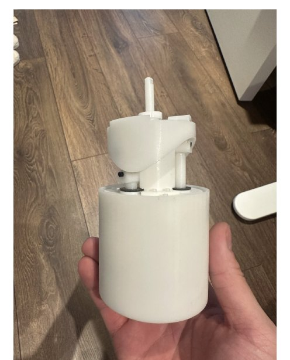
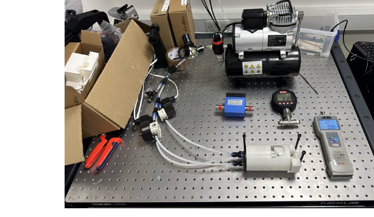
It reached 0.18–0.60 N·m of torque at 169–215 rpm, with 73–83% conversion efficiency and up to 43 N of thrust, holding continuous rotation for 190 seconds. For context, steering a catheter needs about 0.015 N·m — so the margin is over tenfold, which is the useful part: it means the design can afford the losses that clinical packaging will inevitably add.
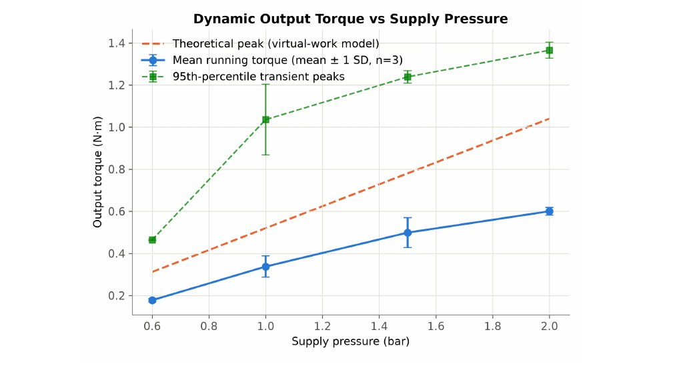
The finding I'd defend hardest isn't the headline torque. Mapping pressure at each point in the circuit showed the solenoid valve alone accounted for a 27% drop — the dominant loss in the system, and not where I'd expected it. Chasing more efficiency from the diaphragm would have been wasted effort; the valve is what the next revision needs to address.
A wearable forearm assist for people with muscle weakness. Three surface EMG sensors detect the wearer starting a contraction; an Arduino drives a pump through MOSFETs to inflate McKibben pneumatic muscles, and opens a solenoid to release them when the arm relaxes. The intent is simple — the device should amplify what the wearer is already trying to do, not act on its own.
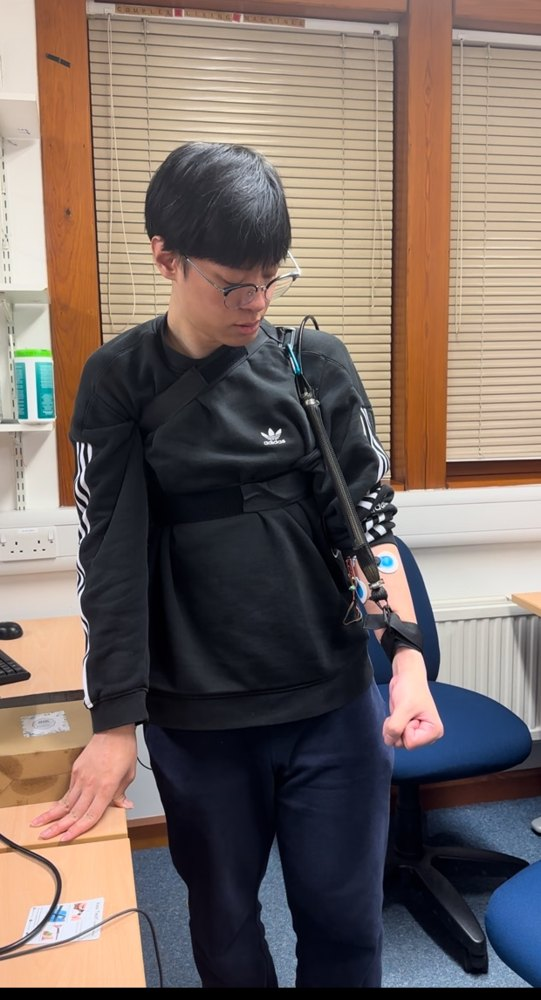
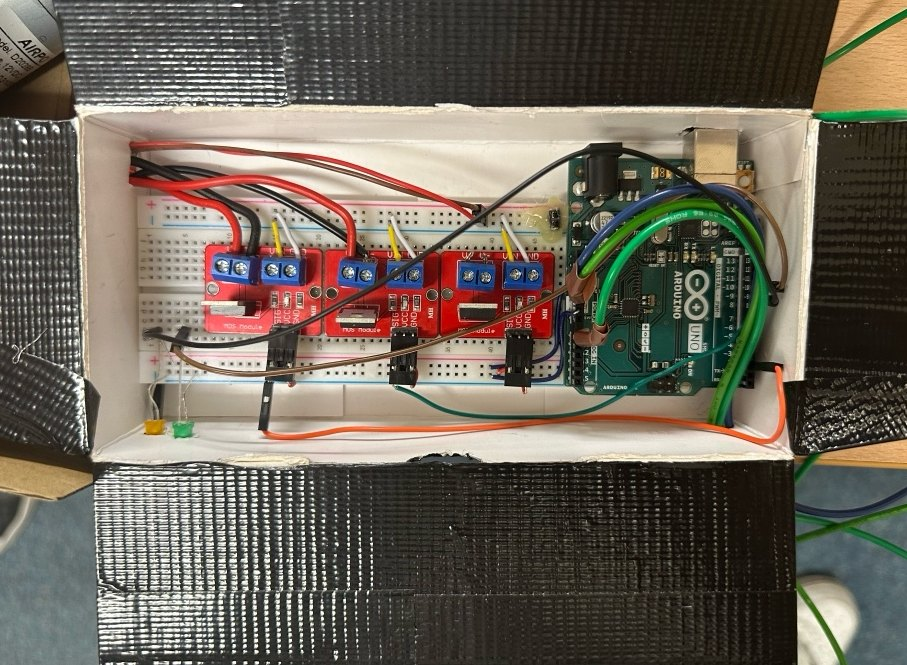
Four actuator generations went into it, each revision driven by something failing in testing rather than by redesigning on paper. A single latex balloon in a braid proved the principle and burst. A double balloon reduced how often it burst without fixing why. Four muscles manifolded together gave more force and four times the leak paths. The version that held was a single silicone tube, because silicone tolerated the pressure cycling that latex simply did not. Validation was functional rather than abstract: lifting a laptop, holding a bag, comparing elbow angle at rest against elbow angle with the muscle inflated.
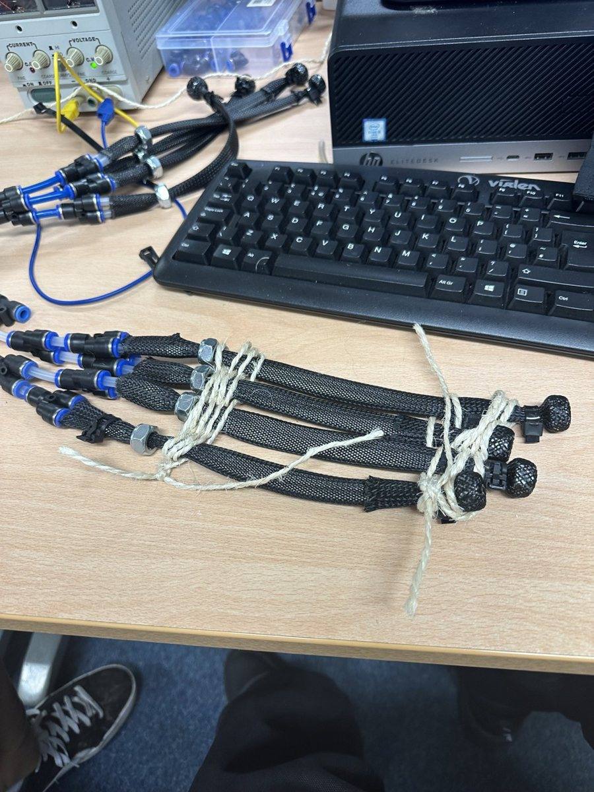
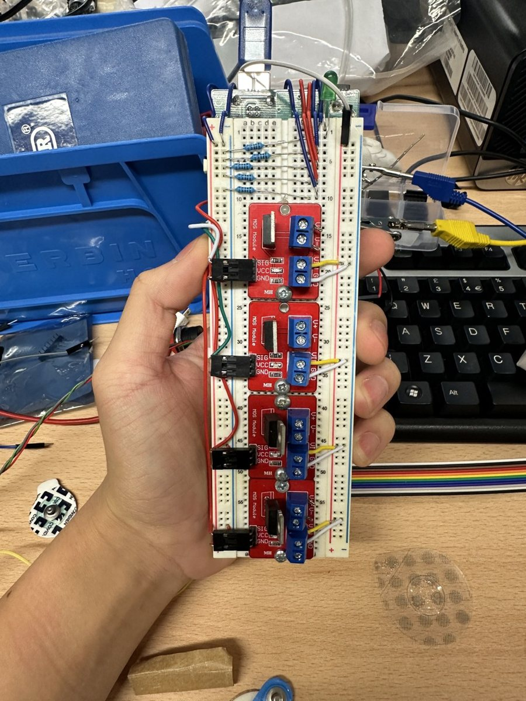
Two things dominated the control problem. Raw EMG is a noise-like signal swinging about zero, so thresholding it directly is meaningless — it needs rectifying and enveloping first. And a single threshold makes the pump audibly chatter whenever the signal hovers near it, which separate activate and release thresholds solve.
The part I think about most is safety. This is strapped to someone's arm, and the failure that matters isn't the device declining to help — it's the device inflating and staying inflated because an electrode came loose or the wearer's muscle fatigued mid-hold. So there are limits on continuous inflation, hold time and duty cycle that operate independently of the EMG signal entirely, and anything unexpected releases rather than holds.
Control logic and safety interlocks on GitHubA 3D-printed Brunel Hand 2.0 with five Dynamixel servos that copies your hand in real time, using nothing but a webcam — no glove, no sensors on the user. Commercial gesture control usually means wearing something; the point here was to see how far you get with hardware people already own.
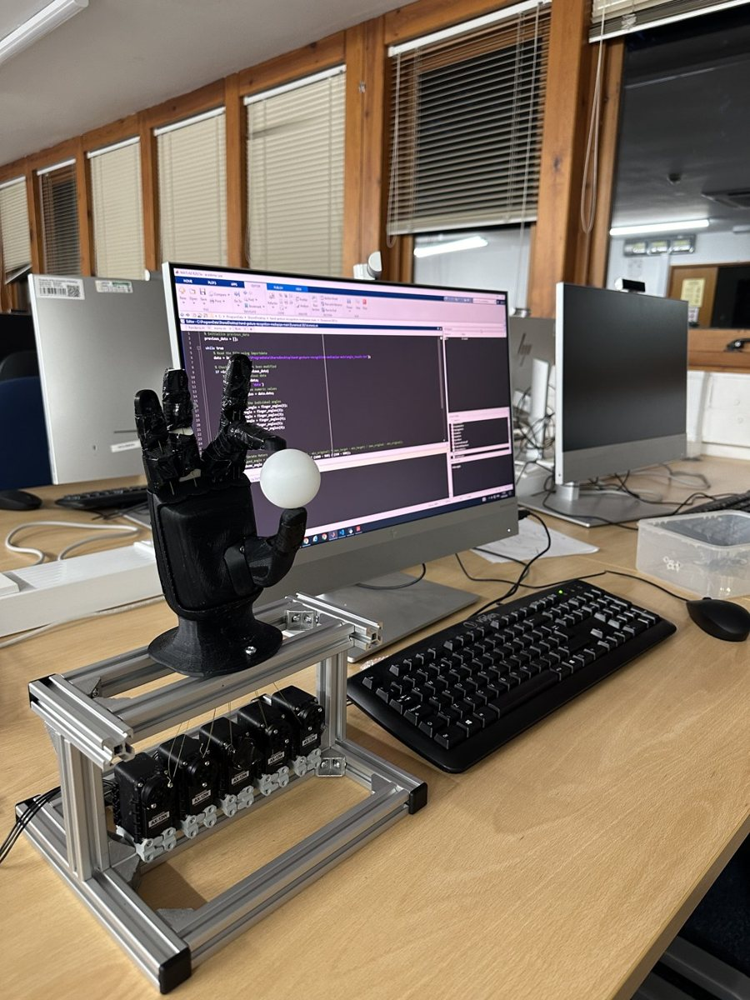
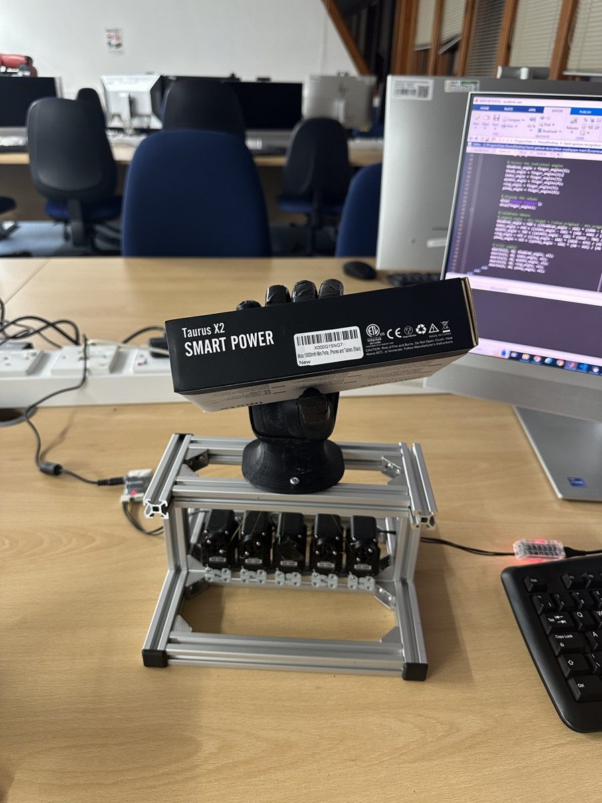
The design decision that made it work: map joint angles, not landmark positions. Coordinates depend on how far you are from the camera, so a system built on them works at one distance and nowhere else. Angles are invariant to distance and framing, so the same gesture produces the same grip whether you're at the desk or across the room.
Beyond that it was calibration and restraint — every person's range of motion differs, so each finger is normalised against its own open and closed extremes, and commands are clamped to the servo's mechanical limits so the motors can't stall against the hand's own structure.
The bug I found on revisiting it. The original build passed motor commands to MATLAB through a shared text file rewritten every frame. It worked, but it has a race condition: MATLAB can read midway through Python's write and get a truncated line, which parses to a garbage motor position and a jerking finger. It now writes to a temporary file and calls an atomic rename, so a reader sees either the complete old file or the complete new one, never half of either.
Tracking and motor mapping on GitHubA rigged 3D face whose eyes follow you around the room, driven by an ordinary webcam and nothing else. Commercial gaze trackers infer direction from pupil position and corneal reflection using dedicated infrared hardware. That is far more accurate, and far more expensive. For a display that simply acknowledges someone is there, you don't need millimetre gaze accuracy. You need plausible, responsive motion from hardware people already own.
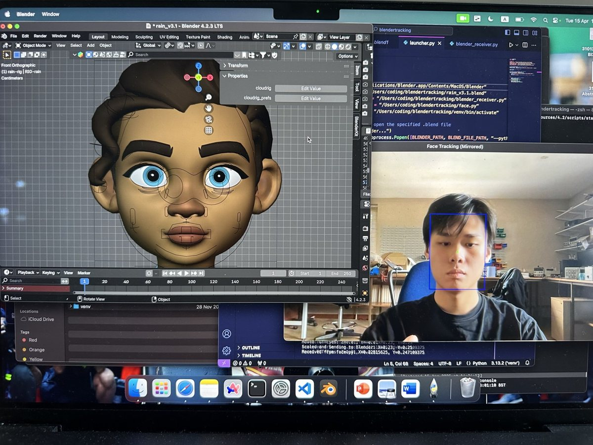
So the trade was deliberate: use head position as a proxy for gaze. That moves the engineering problem from optics to motion quality, because raw detections are jittery and jitter reads as broken rather than alive. Three mechanisms fix it. An exponential moving average damps frame-to-frame noise. A deadzone holds micro-tremor rather than applying it. And neutral is treated as a target eased into by the same filter, so when a face leaves frame the eyes drift back instead of snapping.
The two decisions I'd defend are both about not blocking. Blender's interface runs on one thread, so a blocking socket read freezes the viewport. The receiver polls inside a timer callback and never waits, which means a stalled tracker degrades to the eyes holding position rather than Blender hanging. And it takes the newest sample instead of draining a queue, so a transient stall drops stale frames rather than replaying them late as visible lag.
A bug the demo found. Writing a headless test caught the deadzone comparing the filter's step against its threshold. An exponential moving average's steps shrink geometrically as it converges, so they eventually fell under the deadzone and the value froze short of the target: the eyes rested a few percent off-centre after a face left frame and never quite recentred. Measuring the deadzone against the remaining distance fixes it.
Tracker, smoothing and Blender bridge on GitHubThe task was recognising which phase of an operation a video frame belongs to. My baseline classifier reached 42% accuracy across seven phases, which for a first attempt reads as a model that has learned something.
It hadn't. It had learned that one phase dominates the dataset, so predicting that phase every time scores reasonably. Its recall on Clipping/Cutting — the step where the critical view of safety matters — was zero. Accuracy hid this completely.
So I built diagnostics that couldn't hide it: how concentrated predictions are on a single class, the entropy of the prediction distribution, recall averaged per phase rather than per frame. Re-weighting the loss broke the shortcut and pushed predictions toward the rare phases at the cost of overall accuracy — worse on paper, more honest in practice. Adding an explicit temporal signal cut training loss from 1.77 to 0.06, which told me the real constraint was that a single frame simply doesn't say where you are in an operation.
Pipeline and collapse diagnostics on GitHubAn R pipeline over 812,883 health assessment records, each carrying gender, age, assessment month and season alongside a Traditional Chinese Medicine constitution classification. Preparing it was a substantial part of the work: standardising gender coding, converting numeric months into ordered labels, casting categoricals to factors with deliberately chosen reference levels, and collapsing the constitution categories into the two groups the main analysis needed.
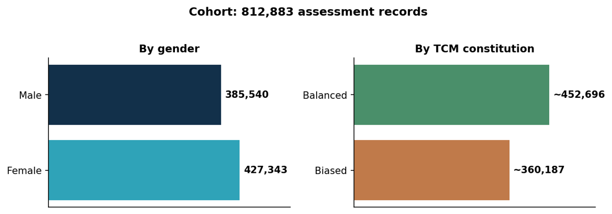
The modelling was binomial and multinomial logistic regression against season, month, gender and age group, reporting odds ratios with confidence intervals, then refitted separately within the male and female subgroups so that the effect of season or age could differ by gender rather than being forced to agree.
The part I'd defend. A single model run gives you one set of odds ratios and no sense of how stable they are. I repeated the whole procedure across ten random seeds, collected the estimates from every run, reported averaged odds ratios and confidence intervals, and combined the p-values using Fisher's method. That turns "here is what the model said" into "here is what the model says consistently", which is a different and much more defensible claim. At this scale it was only tractable because the repeated fits ran in parallel across cores.
Then a second, longitudinal question: not what someone's constitution is, but whether it changes. That meant restructuring the data around individuals rather than assessments — linking records, sorting chronologically, counting return visits, computing follow-up intervals — then regressing changed against unchanged, and finally dropping to the questionnaire items underneath to find which specific responses drive a given transition, with Wilcoxon comparisons alongside the odds ratios so effect size and significance could be read together.
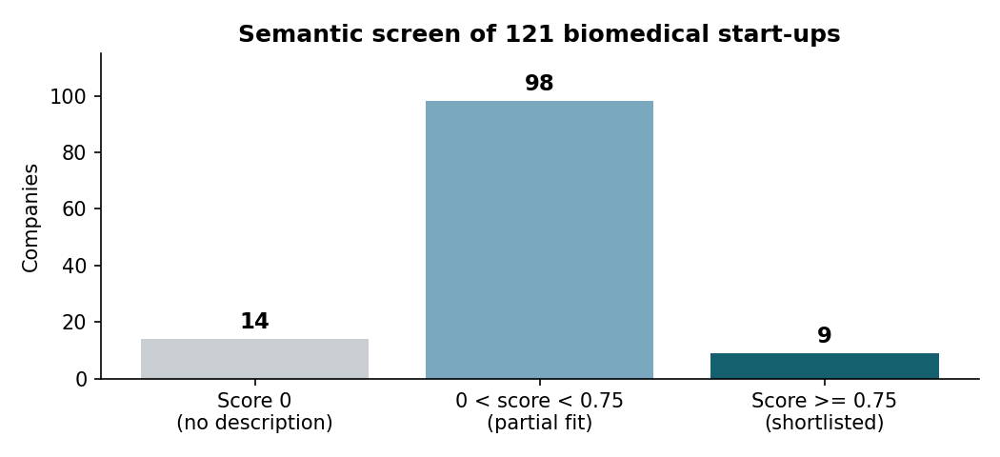
Separately, the Centre wanted to find start-ups worth approaching for incubation. Candidates came from competition finalist lists and job postings, which I collected with Python crawling scripts, producing a spreadsheet of free-text company descriptions, mostly Chinese, with no consistent vocabulary. Keyword matching does not work on that: a company describing organoid models in Chinese and one describing an organoid platform in English are the same target and share not a single character.
So I built a semantic screen. Each description is embedded into a 384-dimensional vector, the Centre's strategic criteria are embedded into the same space, and each company scores the highest cosine similarity it achieves against any of them. Companies with missing descriptions are forced to zero rather than left to generate a spurious score — absence of data is not evidence of poor fit, and conflating the two would have quietly buried real candidates.
Robotics and perception coursework taken further than it needed to go, mostly because the failure cases were more interesting than the pass mark.
A first engineering role in London where hardware meets measurement — medical devices, surgical robotics, assistive technology, or test and validation. I'm most useful somewhere the thing being built is physical, someone eventually depends on it, and finding out how it fails is treated as part of the job rather than bad news.
If that sounds like your team, I'd be glad to hear from you — samtsangwork@gmail.com.